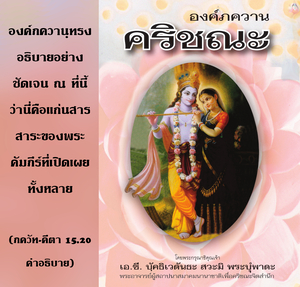
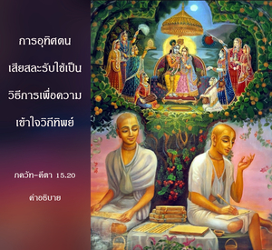

โอ้ ผู้ไร้บาป บัดนี้ข้าจะเปิดเผยส่วนลับที่สุดของคัมภีร์พระเวท ผู้ใดเข้าใจจะเป็นผู้มีปัญญา และความพยายามของเขาจะบรรลุผลโดยสมบูรณ์


องค์ภควานฺทรงอธิบายอย่างชัดเจน ณ ที่นี้ว่านี่คือแก่นสารสาระของพระคัมภีร์ที่เปิดเผยทั้งหลาย เราควรเข้าใจตามที่บุคลิกภาพสูงสุดแห่งพระเจ้าทรงประทานให้แล้วเราจะมีปัญญา และมีความสมบูรณ์ในความรู้ทิพย์ อีกนัยหนึ่ง จากการเข้าใจปรัชญาขององค์ภควานฺนี้และปฏิบัติการอุทิศตนเสียสละรับใช้ต่อพระองค์ ทำให้ทุกคนเป็นอิสระจากมลทินทั้งหลายของสามระดับแห่งธรรมชาติวัตถุ การอุทิศตนเสียสละรับใช้เป็นวิธีการเพื่อความเข้าใจวิถีทิพย์ ที่ใดที่มีการอุทิศตนเสียสละรับใช้ที่นั้นก็จะไม่มีมลทินทางวัตถุคู่กัน การอุทิศตนเสียสละรับใช้ต่อองค์ภควานฺและองค์ภควานฺเองเป็นหนึ่งเดียวกัน และเหมือนกันเนื่องจากทั้งคู่เป็นทิพย์ การอุทิศตนเสียสละรับใช้เกิดขึ้นภายในพลังงานเบื้องสูงของพระองค์ กล่าวไว้ว่าองค์ภควานฺทรงเป็นดวงอาทิตย์ และอวิชชาคือความมืด ที่ใดที่ดวงอาทิตย์ปรากฏจะไม่มีความมืด ดังนั้น เมื่อใดที่มีการอุทิศตนเสียสละรับใช้ภายใต้การนำทางที่ถูกต้องของพระอาจารย์ทิพย์ ผู้ที่เชื่อถือได้ก็จะไม่มีอวิชชา
ทุกๆคนต้องปฏิบัติกฺฤษฺณจิตสำนึกและอุทิศตนเสียสละรับใช้เพื่อให้เกิดปัญญาซึ่งจะทำให้ตนเองบริสุทธิ์ นอกเสียจากว่าเราจะมาถึงสถานภาพแห่งการเข้าใจองค์กฺฤษฺณและปฏิบัติการอุทิศตนเสียสละรับใช้นี้ไม่อย่างนั้นถึงแม้ว่าเราจะชาญฉลาดเพียงใดในการประเมินของสามัญชนทั่วไปเราก็จะไม่เป็นผู้มีปัญญาโดยสมบูรณ์
คำว่า อนฆ ที่ทรงเรียก อรฺชุน มีความสำคัญ อนฆ “โอ้ ผู้ไร้บาป” หมายความว่านอกเสียจากว่าเราจะเป็นอิสระจากผลบาปทั้งปวง ไม่อย่างนั้นก็จะเป็นการยากมากที่จะเข้าใจองค์กฺฤษฺณ เราต้องเป็นอิสระจากมลทินทั้งหลาย และกิจกรรมบาปทั้งปวงจึงจะสามารถเข้าใจองค์กฺฤษฺณได้ แต่การอุทิศตนเสียสละรับใช้จะมีความบริสุทธิ์ และมีพลังอำนาจมากจนกระทั่งเมื่อผู้ใดปฏิบัติการอุทิศตนเสียสละรับใช้ เท่ากับผู้นั้นได้มาถึงระดับแห่งความเป็นผู้ไร้บาปโดยปริยายในทันที
ขณะที่ปฏิบัติการอุทิศตนเสียสละรับใช้อย่างใกล้ชิดกับเหล่าสาวกผู้บริสุทธิ์ในกฺฤษฺณจิตสำนึกอย่างสมบูรณ์ จะมีบางสิ่งบางอย่างจำเป็นที่จะต้องขจัดไปให้หมดสิ้น สิ่งสำคัญที่สุดที่เราต้องข้ามให้พ้นคือ ความอ่อนแอของหัวใจ การตกลงต่ำประการแรกเนื่องมาจากความปรารถนาที่จะเป็นเจ้าเหนือธรรมชาติวัตถุ ที่ทำให้เรายกเลิกการรับใช้ด้วยความรักทิพย์ต่อองค์ภควานฺ ความอ่อนแอของหัวใจประการที่สองคือ เมื่อแนวโน้มที่อยากเป็นเจ้าเหนือธรรมชาติวัตถุเพิ่มพูนมากยิ่งขึ้น เราจะยึดติดกับวัตถุ และการเป็นเจ้าของวัตถุ ปัญหาแห่งความเป็นอยู่ทางวัตถุก็เนื่องมาจากความอ่อนแอของหัวใจเช่นนี้ ในบทนี้ห้าโศลกแรกอธิบายถึงวิธีการที่จะทำให้เราเป็นอิสระจากความอ่อนแอของหัวใจเช่นนี้ จากโศลกที่หกถึงโศลกสุดท้ายได้อธิบายเรื่อง ปุรุโษตฺตม-โยค